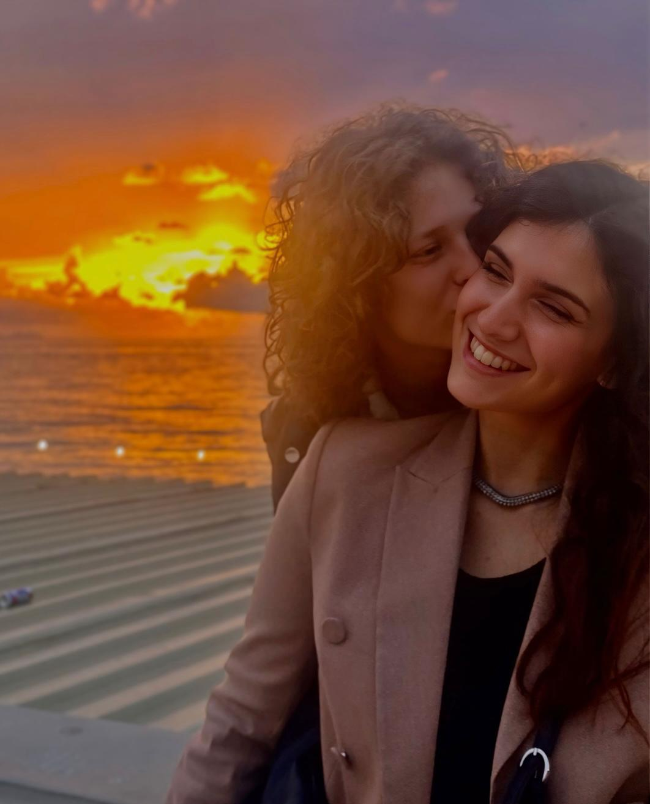

Ti ricordi ogni piccolo momento che ci ha portate fin qui?
A volte ci penso davvero: a quanti piccoli istanti, quasi invisibili, ci hanno portate oggi a festeggiare il nostro primo anno insieme. Perché noi non siamo iniziate all’improvviso. Siamo iniziate piano, quasi in silenzio, senza nemmeno accorgercene. Da gennaio 2025, quando tu hai iniziato a seguirmi su Instagram e io ho ricambiato, qualcosa aveva già cominciato a muoversi. E da lì, per mesi, ci siamo guardate da lontano: un like a una storia, poi un altro, poi un altro ancora. Quei like che sembravano piccoli gesti, ma in realtà dicevano molto più di quanto avessimo il coraggio di scrivere. Entrambe pensavamo la stessa cosa, senza saperlo: “Mi piace. Ha le vibes giuste.” Eppure nessuna delle due trovava il coraggio di fare il primo passo. È strano pensare che mentre la vita andava avanti normalmente, noi ci stavamo già scegliendo un po’, senza dircelo. Dettaglio dopo dettaglio, storia dopo storia, emozione dopo emozione. Fino a quel momento in cui tutto ha smesso di restare sospeso ed è iniziato davvero. Fino a diventare noi.
